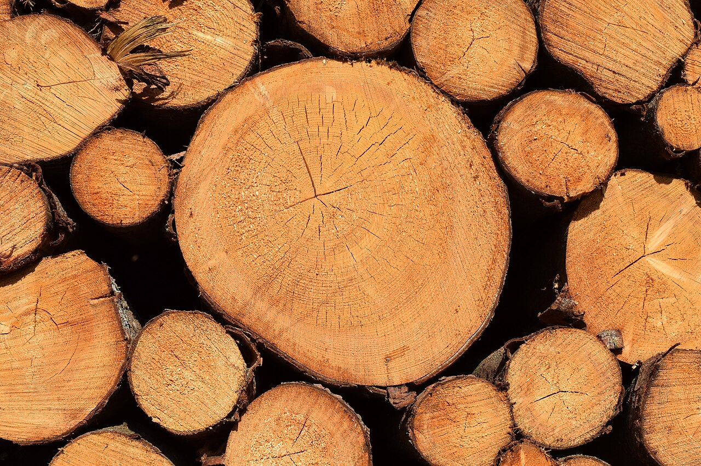

A whole-tree copper ledger: take up metal already in contaminated soil, move it without poisoning the pine, capture it in monitored wood, then recover the material responsibly.
01 / soil inventory02 / xylem transport03 / tissue capture04 / harvest + recoveryconceptual material flow / no measured yield
material references
Metal-tolerant plant. Layered pine tissue.
One image is a plant associated with metal-rich ground. The other is the pine tissue target that makes the transport and storage problem much harder than it looks in a simple diagram.
a real metallophyteThe yellow calamine violet is associated with metal-rich calamine soils. It is context for the idea, not the pine chassis I am proposing.
Gilles San Martin · source · CC BY-SA 4.0

the tissue map I have to respectFresh Scots pine cross-sections make the transport and storage problem more concrete than a single tree-shaped box in my diagram.
Radomianin · source · CC BY-SA 4.0
accounting boundary
If the copper disappears from the ledger, the project stops
Copper resistance alone is not enough. The proposal succeeds only if copper remains buffered during uptake, avoids damaging accumulation in needles and roots, and becomes predictably immobilized in harvestable wood.
Delay immobilization until xylem exits transport service
The concept proposes temporary copper buffering in active tissues followed by stronger binding during sapwood-to-heartwood transition (Forest Products Laboratory, 2010).
losses and liabilities
Promoter discovery, mass balance, toxicity, and timescale
No validated pine heartwood-transition promoter or engineered copper-binding system has been selected. Trees are slow, complex, and exposed to strong selection against costly traits.
first reconciliation
Quantified copper fate across every major tissue
A study must close the copper mass balance across soil, roots, bark, sapwood, transition wood, heartwood, needles, litter, and leachate while maintaining plant health.
material flow
Buffer it. Move it. Trap it. Account for it.
“Copper-enriched wood” is not a sufficient specification. The chemical form, tissue distribution, loading range, leaching behavior, and end-of-life route must all be defined.
01 · Site and uptake
Use copper already present at controlled sites
The intended context is monitored phytoremediation on copper-affected land, not copper addition to ordinary forests. Soil chemistry and bioavailability would determine whether plant uptake is plausible (Alford et al., 2010; Awa & Hadibarata, 2020).
02 · Temporary buffering
Reduce free-ion exposure during transport
Phytochelatin-like ligands, metallothionein-like binding, and vacuolar sequestration are candidate principles for reducing free Cu²⁺ toxicity, not yet a selected engineered pathway (Yruela, 2005; Hall, 2002; Cobbett, 2000).
03 · Transition targeting
Discover a tissue program before designing the switch
Transcriptomic comparison of active sapwood and transition tissues would be required to identify candidate regulatory elements. Heartwood targeting is currently the largest speculative step (Forest Products Laboratory, 2010).
Leaching no worse than an appropriate commercial copper-treated-wood control under wet–dry cycling.
Mobile copper release offsets any remediation benefit.
Material performance
No more than 10% loss in required strength or workability while showing a pre-registered biological-resistance benefit.
Brittleness, conductivity, tool wear, dust, or fire risk outweighs the useful effect.
liability register
Every copper pathway ends somewhere
Needle fall, leaching, machining dust, accidental burning, and demolition waste are part of the same system as uptake and wood formation.
Environment
Controlled contaminated sites only
Do not introduce copper or engineered trees into normal forests; monitor soil, litter, runoff, and neighboring vegetation.
Biology
Multiple limits, not one genetic switch
Use reproductive containment, trait-stability monitoring, and removal criteria rather than assuming a costly engineered pathway will remain stable.
Processing
Specialized material handling
Characterize saw-blade wear, cutting forces, airborne dust, fasteners, resistivity, and finishing before architectural use.
End of life
Label, recover, and never burn casually
Route offcuts and demolition waste through treated-wood recovery or regulated disposal; measure smoke and ash hazards (Lebow, 2004; Freeman & McIntyre, 2008).
work order
Start with speciation, not a forest
The slow timescale of pine makes early rejection tests essential before any long-duration growth study.
Ligand and speciation screen
Compare candidate copper binders for affinity, release, precipitation, oxidation state, and compatibility with lignocellulosic substrates.
Model-plant toxicity
Quantify localization, chlorophyll, oxidative stress, root damage, and free-ion buffering in a faster experimental chassis.
Pine tissue discovery
Map expression and chemistry across bark, cambium, sapwood, transition wood, heartwood, roots, and needles.
Targeting feasibility
Test whether candidate regulatory elements can bias binding activity toward tissues entering the heartwood program.
Material characterization
Measure copper form, distribution, leaching, strength, moisture, workability, conductivity, fire behavior, and biological resistance.
Lifecycle assessment
Compare total remediation benefit, land use, time, processing hazards, recovery, and disposal against existing alternatives.
source ledger
References and material assumptions
These papers support separate mechanisms and the safety context. None of them demonstrates my proposed pine-targeting system.
Alford, É. R., Pilon-Smits, E. A. H., & Paschke, M. W. “Metallophytes: A View from the Rhizosphere.” Plant and Soil, 2010. DOI
Awa, S. H., & Hadibarata, T. “Removal of Heavy Metals in Contaminated Soil by Phytoremediation Mechanism: A Review.” Water, Air, & Soil Pollution, 2020. DOI
Yruela, I. “Copper in Plants.” Brazilian Journal of Plant Physiology, 2005. DOI
Hall, J. L. “Cellular Mechanisms for Heavy Metal Detoxification and Tolerance.” Journal of Experimental Botany, 2002. DOI
Cobbett, C. S. “Phytochelatins and Their Roles in Heavy Metal Detoxification.” Plant Physiology, 2000. DOI
Lebow, S. T. “Alternatives to Chromated Copper Arsenate for Residential Construction.” USDA Forest Products Laboratory, 2004. PDF
Freeman, M. H., & McIntyre, C. R. “A Comprehensive Review of Copper-Based Wood Preservatives.” Forest Products Journal, 2008.
Forest Products Laboratory. Wood Handbook: Wood as an Engineering Material. USDA Forest Service, FPL-GTR-190. PDF
visual note: the mechanism diagram is my own HTML/CSS sketch. the two photos are real reference images; full credits and licenses are listed above and in IMAGE_CREDITS.md.